ColaVM Specification
Architecture
The component controlling each of the other components' operations is the Control Unit (CU).
The core of the ColaVM is a stack (ST), on which all the operations are performed. Each element of the ST is a 32-bit integer.
It also consists of a Variable Array (VA), in which variables can be stored for later use. The VA can hold 256 32-bit integers.
The execution is done via a Program Counter (PC). The PC points at the instruction which is being executed. The PC model allows for easy change-of-flow of execution during jumps.
The last component is the Instruction Memory (IM). The IM holds all the instructions of the program, and is the memory whose elements PC points to.

Instruction Set
The instructions are all variable-sized. Variable-sized instructions allow for compact and dense compiled binaries.
Every operation has both an 8-bit and a 32-bit counterpart. This greatly optimizes the binary size for operations with small arguments.
There are special OpCodes for pushing common constants 0-9 on the stack. This reduces the expense of pushing these common constants from 2 bytes to 1 byte of required intruction memory, further reducing the binary size. This idea is borrowed from the Java Virtual Machine.
OpCodes for incrementing and decrementing reduce the overhead of adding and subtracting 1, reducing the instruction byte count from 2 to 1.
It is to be noted that the programmer writing the source code will not explicitly write separate variants for the 8-bit and the 32-bit instructions, nor the explicit PushConst(0-9) instructions. The programmer will write generic instructions like "PRINT", "PUSH", "JUMP" and the assembler will resolve them into the respctive variant.
OpCodes
Each instruction operates on the stack unless stated otherwise. Values are 32-bit signed integers. Instructions with an argument store that argument immediately after the opcode.
PUSH8 <value>- Pushes an 8-bit signed integer onto the stack.PUSH32 <value>- Pushes a 32-bit signed integer onto the stack.POP- Removes the top value from the stack.TOP- Prints the current top stack value. Does not modify the stack.ADD- Pops the top two values, adds them, and pushes the result.SUB- Pops the top two values, subtracts the top value from the next value, and pushes the result.MUL- Pops the top two values, multiplies them, and pushes the result.DIV- Pops the top two values, divides the second value by the top value, and pushes the result.MOD- Pops the top two values, calculates the remainder when second value is divided by the top value, and pushes the result.CHAR <length>- Popslengthvalues and prints them as characters.PRINT8 <length>- Printslengthsubsequent hardcoded bytes (max 256 bytes) from the instruction stream. Does not use the stack.PRINT32 <length>- Printslengthsubsequent hardcoded bytes (max 4294967296 bytes) from the instruction stream. Does not use the stack.JUMP8 <address>- Sets the program counter to the given 8-bit instruction address.JUMP32 <address>- Sets the program counter to the given 32-bit instruction address.JEZ8 <address>- Pops one value. Jumps if the value is zero.JEZ32 <address>- Pops one value. Jumps if the value is zero.JEQ8 <address>- Pops two values. Jumps if they are equal.JEQ32 <address>- Pops two values. Jumps if they are equal.JGT8 <address>- Pops two values. Jumps if the second value is greater than the first.JGT32 <address>- Pops two values. Jumps if the second value is greater than the first.JLT8 <address>- Pops two values. Jumps if the second value is less than the first.JLT32 <address>- Pops two values. Jumps if the second value is less than the first.JGE8 <address>- Pops two values. Jumps if the second value is greater than or equal to the first.JGE32 <address>- Pops two values. Jumps if the second value is greater than or equal to the first.JLE8 <address>- Pops two values. Jumps if the second value is less than or equal to the first.JLE32 <address>- Pops two values. Jumps if the second value is less than or equal to the first.STORE <index>- Pops one value and stores it in the Variable Array at the given index.LOAD <index>- Pushes the value stored in the Variable Array at the given index.PUSHCONST0 ... PUSHCONST9- Pushes the constants 0 through 9 onto the stack.INC- Pops one value, increments it, and pushes the result.DEC- Pops one value, decrements it, and pushes the result.END- Stops execution. Does not modify the stack.
Instruction Arguments
- Values after
PUSH8,PUSH32, and jump instructions are literal data. - Jump addresses refer to instruction memory positions (the program counter value).
PRINT8andPRINT32lengths refer to bytes stored directly in the instruction stream after the opcode.STOREandLOADarguments refer to Variable Array indices (0-255).- Arithmetic and comparison instructions take their operands from the stack and have no encoded arguments.
Assembler
The ColaVM assembler is called Fill.
The assembler goes through the source code twice.
During the first pass, the assembler collects all the labels and resolves them to instruction addresses. It also resolves each generic instruction ("PRINT", "PUSH", "JUMP") to the respective 8-bit or 32-bit variant.
During the second pass, the assembler packs each resolved instruction into the binary.